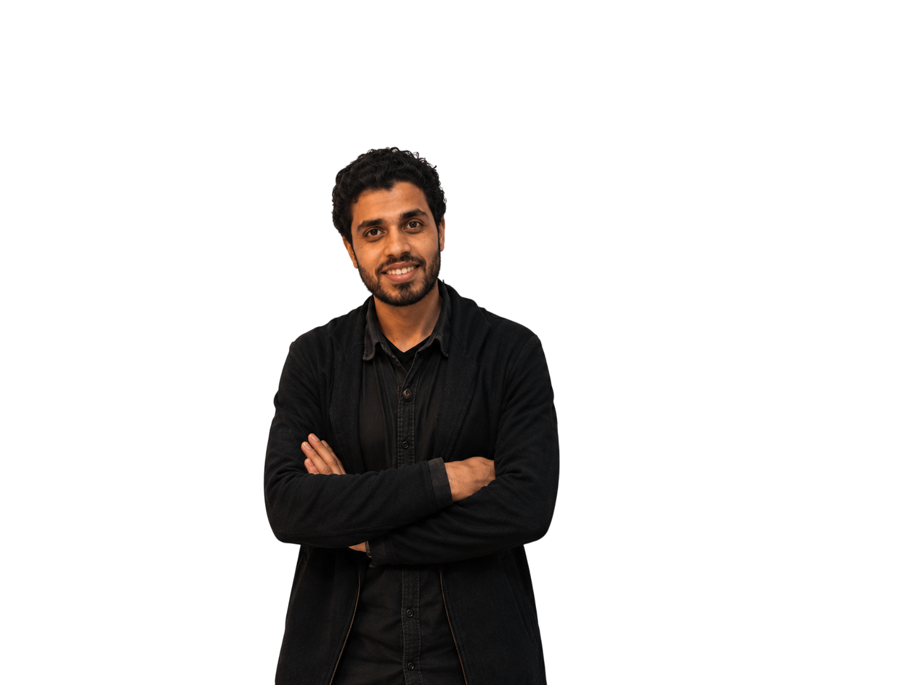

أهلاً بك في موقع فيكتور بيولوجي لدراسة الأحياء وعلوم الأرض

دكتور محمود سعد
مؤلف كتاب البرهان والدليل للصفوف الثانوية الثلاثة
صاحب الخبرة الطويلة في تبسيط أعمق تفاصيل منهج الأحياء والجيولوجيا. نعتمد على أسلوب الشرح المبسط المبني على الفهم والربط بين الأفكار، مع متابعة دورية مستمرة واختبارات تفاعلية تضمن لك التميز وتقفيل المادة في الثانوية العامة بكل سهولة.